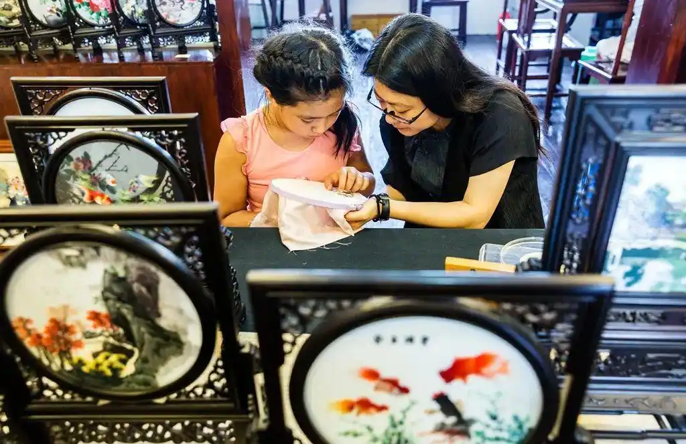
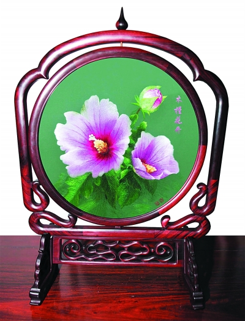
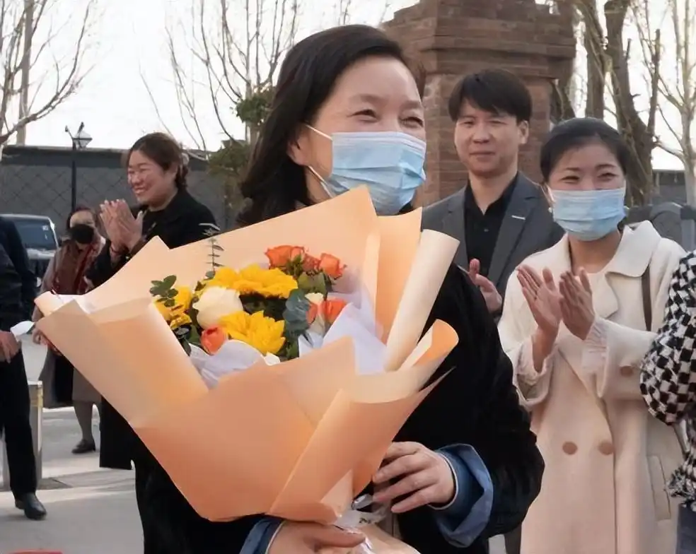
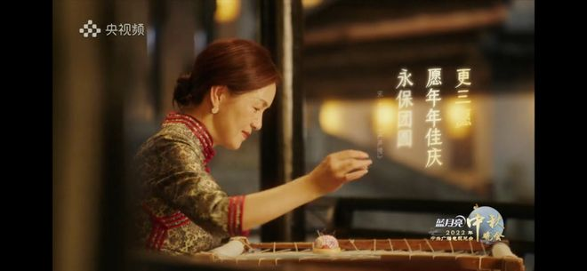

姚建萍是我国著名苏绣大师和国家非物质文化遗产传人，享有“苏绣皇后”的美誉。
视频来源：中新视频（【党外人士话复兴】姚建萍：一针一线讲好中国故事）
少年启蒙
1967年，姚建萍出生在苏州镇湖，这里是我国著名的刺绣产业基地，有悠久的苏绣发展历史。
姚建萍对刺绣的浓厚兴趣根植于血脉，自记事起她就浸润在充满苏绣文化底蕴的家庭氛围中。
当其他小孩在外边嬉戏打闹的时候，姚建萍就喜欢看着母亲用一双灵巧的手不断的绣出一个个精美的人物。
母亲发现女儿有刺绣方面的天分，开始注重培养姚建萍的苏绣能力。
年幼聪慧的姚建萍从分丝开始学习，这一学就表现出了异于常人的刺绣天赋——当时年仅八岁的她，就能把一根头发丝细的线分成128根。
从此姚建萍的刺绣学习之路一发不可收。别的同龄孩子还在外面玩耍，而她却待在屋子里面沉心练习基本功，经常一待就是一整天。

而为了更加专心的学习苏绣的技巧，她放弃了考大学的机会，毅然决然的去了苏州的工艺美校学习。
姚建萍在工艺美校学习期间半工半读，从来没有停下手头的练习。
在学习了专业技能之后，她创作的作品更加精美。
在工艺美院毕业后，姚建萍选择继续深造，进入了苏州刺绣研究所，师从苏绣大师徐志慧。
在研究所学习的四年时间里，姚建萍刻苦认真，经过更加专业而系统的学习和积累，不断提高自己苏绣的水平。
四年后毕业时，她的苏绣技艺已十分出彩，几乎和许多成名多年的大师级人物相差无几。
对于潜心学习多年苏绣技术的姚建萍来说，她最拿手的就是人物肖像绣，这是苏绣中最难的一项。彼时刚毕业的姚建萍也没想到，自己未来会有绣制国礼的机会。
木槿花开
2014 年 5 月，姚建萍受命创作国礼《木槿花开》。她带领团队反复构思，先后设计 8 套方案，经与北京多次沟通修改后最终定稿。这幅双面绣需绣 6 至 8 层，以分层加色呈现光影效果，共使用 12 套色系、116 种颜色。绣面上三朵木槿花或绽放、或待放、或含苞，充满朝气。
作品整体制作顺利，却在 6 月 26 日送京验收时出现小插曲：外包装凸面玻璃上有一处极细微黑点。追求完美的姚建萍当即带回苏州重做。
她连夜准备同规格玻璃，亲自从四十多块中精挑出一块无瑕之品重新安装，当晚便乘火车赶回北京，确保国礼完美无缺。

坚守初心
早在1997年的时候，姚建萍就被联合国授予了民间工艺美术家的荣誉称号。当年从研究院毕业的时候，姚建萍苏绣技艺就已经十分出彩。身边不少人都劝她，认为凭借她现在的水平，用自己高超的苏绣技艺绣出好的作品再卖个好价钱，对于普通人来说就够了。
但姚建萍却却不这么认为，对她来说，学习苏绣不是为了以此牟利。
她的本意是想追逐自己的爱好和梦想，但是在学习苏绣的这几年里，她逐渐了解到苏绣这个传统的民族技艺正在慢慢消失。
因此，她想要用手中细细的银针，把这一非物质文化遗产发扬光大，更好的传承下去，让更多人了解苏绣文化。
在潜心创作的同时，她始终牢记要把这项非物质文化遗产传承下去的初心，在苏州家乡创办了“苏州姚建萍刺绣艺术馆”，毫无保留的将自己的技艺和总结的方法传授给学生。
有人嘲笑她太过天真，自古就有说法，“教会徒弟，饿死师傅”，自己潜心研究多年的技术，怎么能这样轻易传授他人？还有人认为，这只是姚建萍赚钱的噱头而已。
但姚建萍认为，既然要传承传统文化技术，就不能打着传承文化的名号收了徒弟却不传关键技术，这样藏着掖着不仅教不好学生，更发扬不出去苏绣文化，有悖自己的初心。
因此，她对待自己的学生全部都是倾囊相授，想让这些学习的年轻人把中国苏绣文化真正发扬起来。

对于姚建萍来说，在苏绣上的这条道路上是没有尽头的。
只有不断的学习，不断的总结，才能做的更好。一旦停下了探索的脚步，就会不进反退。这也是她给自己的取了个“不偷懒的姚建萍”的网名的原因。
现在，已经五十多岁的姚建萍还在也继续着她的苏绣事业。
